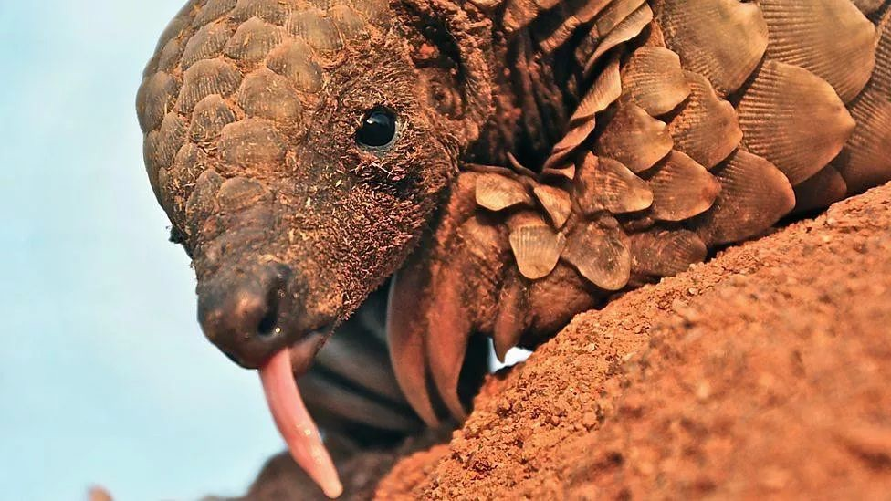
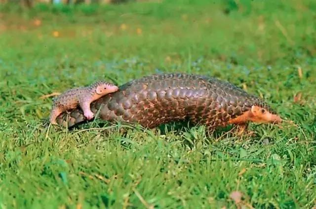
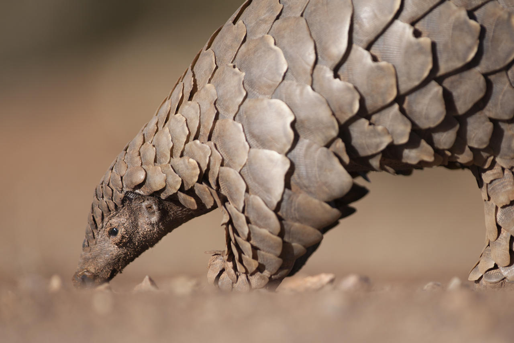
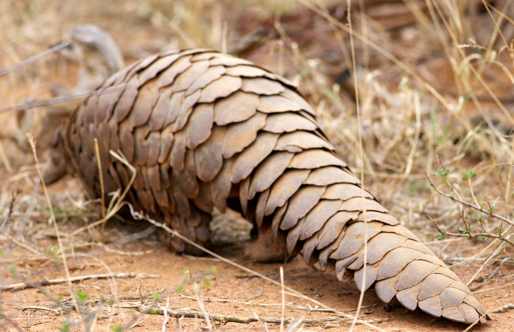
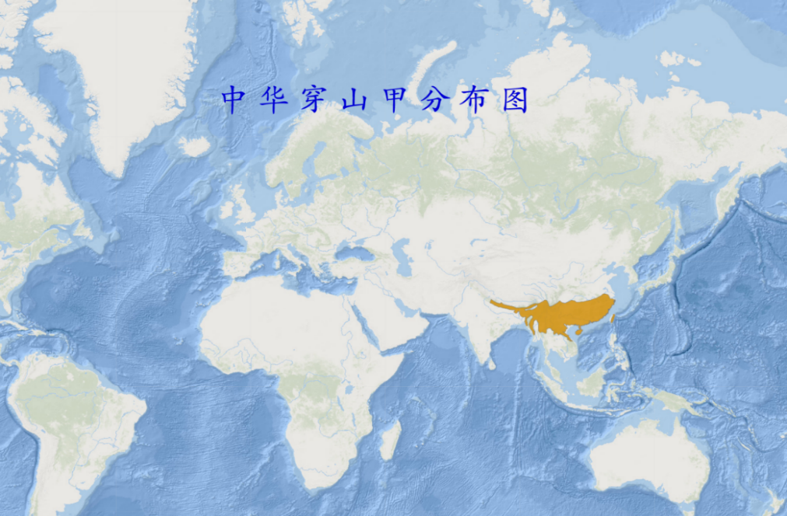

中华穿山甲（学名：Manis pentadactyla）：是鳞甲目、穿山甲科的哺乳动物。头体长42-92厘米，尾长28-35厘米，体重2-7千克；鳞片与体轴平行，共15-18列。尾巴上另有纵向鳞片9-10片。鳞片棕褐色，老年兽的鳞片边缘橙褐或灰褐色，幼兽尚未角化的鳞片呈黄色。吻细长。脑颅大，呈圆锥形。具有一双小眼睛，形体狭长，全身有鳞甲，四肢粗短，尾扁平而长，背面略隆起。不同个体体重和身长差异极大。舌长，无齿。耳不发达。足具5趾，并有强爪；前足爪长，尤以中间第3爪特长，后足爪较短小。全身鳞甲如瓦状。
中华穿山甲头体长42-92厘米，尾长28-35厘米，体重2-7千克；吻细长。脑颅大，呈圆锥形。具有一双小眼睛，形体狭长，全身有鳞甲，四肢粗短，尾扁平而长，背面略隆起。不同个体体重和身长差异极大。头呈圆锥状，眼小，吻尖。舌长，无齿。耳不发达。足具5趾，并有强爪；前足爪长，尤以中间第3爪特长，后足爪较短小。全身鳞甲如瓦状。鳞片与体轴平行，共15-18列自额顶部至背、四肢外侧、尾背腹面都有。尾上另有纵向鳞片9-10片。鳞甲从背脊中央向两侧排列，呈纵列状。鳞片呈棕色，腹部的鳞片略软，呈灰白色，老年兽的鳞片边缘橙褐或灰褐色，幼兽尚未角化的鳞片呈黄色。鳞有三种形状：背鳞成阔的菱形，鳞基有纵纹，边缘光滑。纵纹条数不一，随鳞片大小而定。腹侧、前肢近腹部内侧和后肢鳞片成盾状，中央有龙骨状突起，鳞基也有纵纹。尾侧鳞成折合状。鳞片之间杂有硬毛。两颊、眼、耳以及颈腹部、四肢外侧、尾基都生有长的白色和棕黄色稀疏的硬毛。绒毛极少。成体两相邻鳞片基部毛相合，似成束状。雌体有乳头一对。和同属中的其他物种的差别是耳朵露在外面。
中华穿山甲是特化物种、视觉基本退化、尤以嗅觉灵敏。 穿山甲的肝脏不大，肝解毒功能弱，免疫系统弱，属于单室胃，胃中披着角质膜，胃腺部的黏膜处密布许多呈"S"型的皱襞，借吞食时吞进胃中的小砂石将食物磨碎。穿山甲肠管表面平滑，小肠长。 中华穿山甲栖息于丘陵、山麓、平原的树林潮湿地带。生活于各种各样的栖息地，包括热带森林、针叶林、常绿阔叶林、竹林、草原和农田。
喜炎热，能爬树。能在泥土中挖深2-4米、直径20-30厘米的洞。末端的巢直径约2米。以长舌舐食白蚁、蚁、蜜蜂或其他昆虫。猛兽、猛禽为天敌，偶尔遭家犬袭击。 中华穿山甲过着孤独的生活。虽然它们是高度陆地动物，但它们也完全有能力攀爬树木，还有很好的游泳能力。穿山甲经常缓慢地移动四肢，用自己的指关节，其前爪卷曲在下面，产生一些非常独特的足迹。偶尔，它们可能会抬起后腿，身体更加直立，前肢保持在空中，这也是攻击白蚁巢穴时所采取的姿势。
